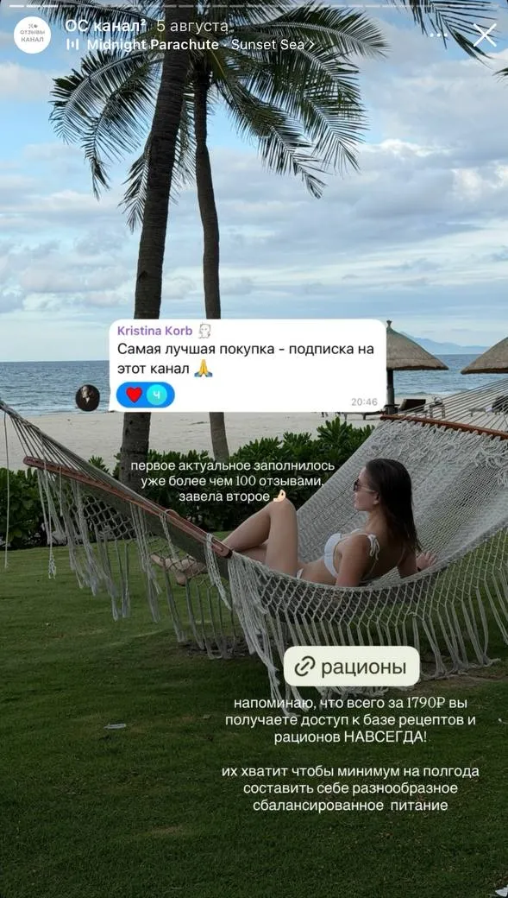
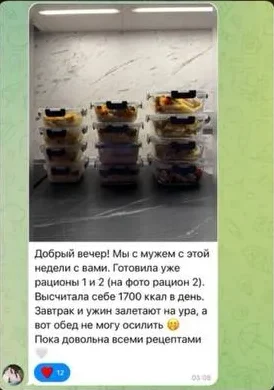
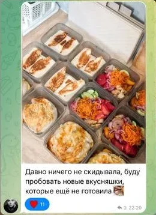
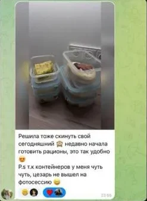
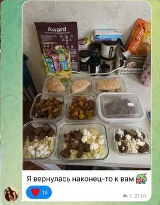
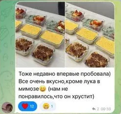

Выбираешь рацион
58+ готовых меню на 2–3 дня под твою калорийность — от 1400 до 1800 ккал. Завтраки, обеды, ужины и перекусы уже расписаны.


Кристина · закрытый канал «Что поесть»
Оплата в Telegram-боте — ссылка на закрытый канал придёт сразу после оплаты.
Готовые рационы от нутрициолога Кристины Василиу: КБЖУ посчитано, продукты списком. Два часа у плиты — и три дня ты ешь пасту и десерты, оставаясь в дефиците.


Девять вечера, ты у холодильника. В сохранённых — сотни рецептов, а плана на завтра нет. В итоге доставка, печенька и «начну с понедельника».
Срываются не от слабости, а от усталости каждый день решать, что поесть. Это решение мы берём на себя.


58+ готовых меню на 2–3 дня под твою калорийность — от 1400 до 1800 ккал. Завтраки, обеды, ужины и перекусы уже расписаны.
Корзина продуктов к рациону собрана заранее — с граммовками. Один поход в магазин и ничего лишнего в чеке.
1,5–2 часа по пошаговому видео: что ставить первым, что готовить параллельно. Справится даже тот, кто никогда не готовил.
Раскладываешь всё по контейнерам — и до следующей готовки вопрос «что поесть» больше не возникает.
Четыре причины, почему на рационах худеют без срывов — и не возвращаются к «с понедельника».
Граммовки рассчитаны так, что ты сыта, а вес уходит. Без весов на кухне и приложений-счётчиков.

Шоколадка уже вписана в калории. Когда её можно, её не хочется съесть тайком ночью.
Еда ждёт в холодильнике. Силе воли просто не на что тратиться — и срываться не из-за чего.
Муж и дети едят то же самое, только в своих порциях. Не нужно готовить себе «диетическое» отдельно.

Выбери свою цифру и посмотри реальный рацион из канала. Нужна точная норма — в канале есть промпт, который пересчитает порции под тебя.
ккал в день · реальное фото рациона

В рационах есть паста, пицца, хачапури, лазанья, супы, брауни, креветки, роллы с манго и шоколадки — это не диета и не марафон.
Закрытый Telegram-канал: ищешь рацион по хэштегу калорийности — и готовишь.
Я сама сбросила 13 кг — не на гречке, а на нормальной вкусной еде. Потом выучилась на нутрициолога и собрала систему, по которой живу до сих пор.
Мой муж Макс раньше вообще не готовил. Теперь сам готовит рационы по видео — и минус 9 кг.
Первое актуальное с отзывами в Instagram уже заполнилось — пришлось завести второе.

«Если будете повторять этот рецепт, не забудьте пристегнуть попу — иначе она отлетит от того, как это вкусно!! 100 из 10»
Анастасия


«Самая лучшая покупка — подписка на этот канал 🙏»
Кристина К.



«Тоже недавно впервые пробовала. Всё очень вкусно, кроме лука в мимозе — нам не понравилось, что он хрустит 😅»
честный отзыв



Вся база рационов — в обоих тарифах. Ссылку на канал бот пришлёт сразу после оплаты.
1 790 ₽
один платёж — и без продлений
1 190 ₽
≈ 400 ₽ в месяц — дешевле одной доставки
Нет. Паста, пицца, выпечка, супы и десерты — всё вписано в КБЖУ. Худеешь за счёт порций, а не запретов.
Да. Каждый рецепт показан на видео, последовательность расписана по шагам. Мой муж Макс до этого не готовил вообще.
1,5–2 часа на рацион, которого хватает на 2–3 дня.
Рационы рассчитаны на 1400–1800 ккал. Выбираешь ближайший к своей норме или пересчитываешь порции готовым промптом из канала.
Да. Блюда одни, порции у каждого свои — готовить дважды не нужно.
На тарифе «навсегда» — нет, это разовый платёж. «3 месяца» продлевается автоматически, отменить можно в боте в любой момент.
Один вечер у плиты — и три дня ты занимаешься тем, что любишь, а ужин уже ждёт в холодильнике. Я собрала эту систему для себя. Теперь она твоя.
— Кристина